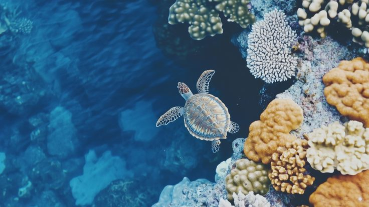
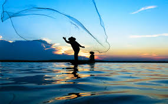
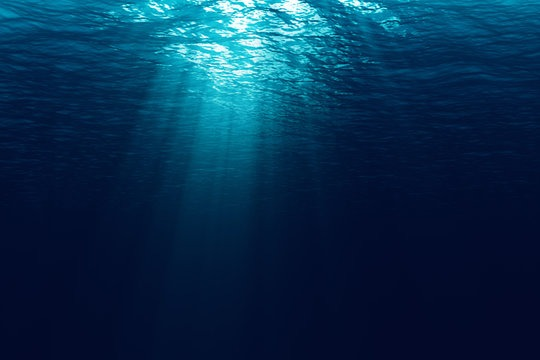

Every year, approximately 8 million metric tons of plastic waste enters our oceans, equivalent to dumping a garbage truck of plastic into the sea every minute. This plastic pollution poses severe threats to marine ecosystems, wildlife, and ultimately human health. From entanglement to ingestion, the consequences are devastating and far-reaching.

There are now over 5 trillion pieces of plastic debris in the world's oceans. The Great Pacific Garbage Patch alone covers an area twice the size of Texas. Most ocean plastic comes from land-based sources: inadequate waste management, littering, and industrial discharge. Single-use plastics like bottles, bags, and straws make up a significant portion of marine debris.
Learn MoreOver 100,000 marine mammals and 1 million seabirds die each year due to plastic pollution. Sea turtles mistake plastic bags for jellyfish, their natural prey. Whales, dolphins, and fish ingest plastic particles that accumulate in their digestive systems, leading to starvation and death. Entanglement in discarded fishing nets and plastic debris causes drowning, strangulation, and severe injuries to countless marine creatures.


Microplastics are tiny plastic fragments less than 5mm in size that result from the breakdown of larger plastics. These microscopic particles have been found in every corner of the ocean, from surface waters to the deepest trenches. Marine organisms at all levels of the food chain ingest microplastics, which can carry toxic chemicals and pollutants. These particles accumulate as they move up the food chain, eventually reaching humans through seafood consumption.
Plastic pollution doesn't just affect marine life—it affects us too. Studies have found microplastics in seafood, drinking water, sea salt, and even the air we breathe. These particles can carry harmful chemicals like BPA and phthalates, which are linked to hormonal disruption, cancer, and developmental issues. The average person may ingest up to 5 grams of plastic per week—the equivalent of a credit card.

Abandoned, lost, or discarded fishing gear—known as "ghost gear"—makes up approximately 10% of all marine plastic pollution. These nets, lines, and traps continue to catch and kill marine animals for decades. Ghost nets entangle whales, dolphins, seals, sea turtles, and fish, causing slow, painful deaths. An estimated 640,000 tons of ghost gear enters the ocean each year.
Everyone can help reduce plastic pollution. Start by reducing single-use plastics: bring reusable bags, bottles, and containers. Properly dispose of and recycle plastics. Participate in beach cleanups and support organizations working to combat ocean pollution. Choose products with minimal packaging and support businesses committed to reducing plastic waste. Your individual actions, combined with millions of others, can make a significant difference.
